Im Menüpunkt…
1 WinLine FAKT
1 Stammdaten
1 Lagerorte
1 Lagerortestamm
… erfolgt die Anlage und Verwaltung der Lagerorte (z.B. Stellplätze, Fächer, etc.). Jedem Lagerort kann hierbei eine oder mehrere Lagerortfunktionen zugewiesen werden. Über diese Funktionen wird wiederum gesteuert, wann welcher Lagerort während der Erfassung zur Verfügung steht.
Hinweis
Standardmäßig wird der Lagerortestamm in einem "Lesemodus" geöffnet, d.h. es können bestehende Lagerorte kontrolliert werden, ein Ändern bzw. eine Neuanlage ist nicht möglich. Hierfür muss zunächst mit Hilfe des Buttons "Bearbeiten" der "Bearbeitungsmodus" aktiviert werden.
Voraussetzung
Voraussetzung für die Anlage von Lagerorten ist eine Lagerortstruktur, welche im Programm "Lagerortstruktur" (WinLine FAKT - Stammdaten - Lagerorte - Lagerortstruktur) angelegt wurde. Gibt es bei dem Start des Programms " Lagerortestamm" noch keine Lagerortstruktur, so erscheint am Bildschirm ein entsprechender Hinweis mit der Möglichkeit der Anlage der Demostrukturen.
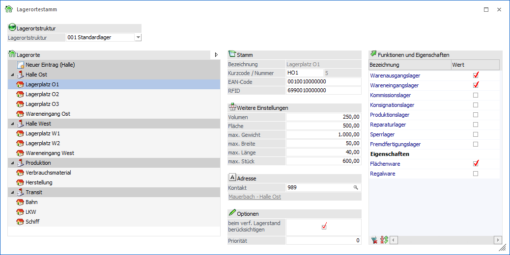
Lagerortstruktur
Ø Lagerortstruktur
An dieser Stelle kann aus der Auswahlbox eine Lagerortstruktur ausgewählt werden. Nach dem Bestätigen der Auswahl werden die Lagerorte der Struktur dargestellt.
Lagerorte
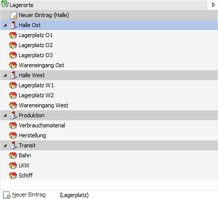
Im Lagerortbaum werden die angelegten Lagerorte dargestellt. Zusätzlich können neue Orte definiert werden.
Ø  alle Hierarchie-Ebenen zu- bzw.
aufklappen
alle Hierarchie-Ebenen zu- bzw.
aufklappen
Durch Anwahl dieses Buttons werden in der Anzeige alle Hierarchie-Ebenen zu- bzw. aufgeklappt. Die Auswahl wird benutzerspezifisch gespeichert und beim nächsten Öffnen automatisch angewendet.
Ø Lagerorte
Mit Hilfe einer Baumstruktur werden die einzelnen Lagerorte angelegt und verwaltet. Die Neuanlage kann hierbei über die folgenden Wege erfolgen:
ü Einzelanlage
Aus der
Baumstruktur wird der Eintrag "Neuer Eintrag (xxx)" ausgewählt. Mit Hilfe der
Taste F2 kann anschließend der Name des Ortes vergeben werden. Durch Anwahl der
Taste Enter wird abschließend der neue Ort in der Baumstruktur angezeigt.
Für
die Anlage von Hierarchie-Ebenen ab Ebene 2 muss zunächst der Button "Neuer
Eintrag (xxx)" unterhalb der Baumstruktur angewählt werden.
Hinweis
Bei der Anlage von Orten ab Hierarchie-Ebene 2 werden die Einstellungen "beim verf. Lagerstand berücksichtigen", "Priorität", "Kontakt", "Lagerfunktionen", sowie "Eigenschaften" der darüber liegenden Ebene übernommen. Wurden Lagerorte vorher geändert bzw. neu angelegt, so ist ein Zwischenspeichern mit Shift+F5 erforderlich, damit die Daten anschließend übernommen werden können.
ü Massenanlage
Aus der
Baumstruktur wird der Eintrag "Neuer Eintrag (xxx)" ausgewählt. Anschließend
steht der Bereich "Neuanlage" zur Verfügung.
Für die Anlage von
Hierarchie-Ebenen ab Ebene 2 muss zunächst der Button "neuer Eintrag" unterhalb
der Baumstruktur angewählt werden.
ü Multianlage
Mit Hilfe des
Ribbon-Buttons "automatische Anlage" können mehrere Lagerorte -
unterschiedlicher Hierarchie-Ebenen - in einem Vorgang angelegt werden (nähere
Information siehe Button "automatische Anlage").
Ø Neuer Eintrag (xxx)
Durch Anwahl des Buttons "Neuer Eintrag" unterhalb des Lagerortbaums können neue Lagerorte ab Hierarchie-Ebene 2 erstellt werden.
Hinweis
Für die Anlage von Orten in der Hierarchie-Ebene 1 steht direkt in der Baumstruktur der Eintrag "Neuer Eintrag (xxx)" zur Verfügung.
Neuanlage
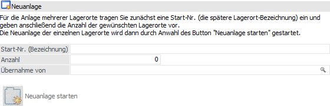
An dieser Stelle besteht die Möglichkeit mehrere Lagerorte, mit einer fortlaufenden Nummerierung, automatisiert anlegen zu lassen.
Hinweis
Der Bereich "Neuanlage" steht im rechten Bereich des Fensters zur Verfügung, wenn in dem Lagerortbaum der Eintrag "Neuer Eintrag (xxx)" bzw. der Button "Neuer Eintrag (xxx)" unterhalb des Baums ausgewählt wurde.
Ø Startnr. (Bezeichnung)
In dem Feld "Startnr. (Bezeichnung)" wird die erste Nummer, unter welcher die Lagerorte angelegt werden sollen, hinterlegt (die spätere Lagerort-Bezeichnung). Hierbei sind auch alphanumerische Eingaben möglich.
Hinweis
Das Zeichen "/" wird für die Darstellung der Lagerort-Hierarchie benötigt und kann somit nicht verwendet werden.
Ø Anzahl
Hier wird die Anzahl der Lagerorte hinterlegt, welche in weiterer Folge angelegt werden sollen.
Ø Übernahme von
An dieser Stelle wird der Lagerort hinterlegt, von welchem die Einstellung für die neuen Orte übernommen werden sollen.
Hinweis
Wenn an dieser Stelle keine Eingabe erfolgt, so werden bei der Anlage von Orten ab Hierarchie-Ebene 2 automatisch die Einstellungen "beim verf. Lagerstand berücksichtigen", "Priorität", "Kontakt", "Lagerfunktionen", sowie "Eigenschaften" der darüber liegenden Ebene übernommen. Wurden Lagerorte vorher geändert bzw. neu angelegt, so ist ein Zwischenspeichern mit Shift+F5 erforderlich, damit die Daten anschließend übernommen werden können.
Ø Neuanlage
Nach der Angabe einer Startnummer, sowie der Anzahl, wird durch Anwahl dieses Buttons die Neuanlage gestartet.
Lagerortdefinition
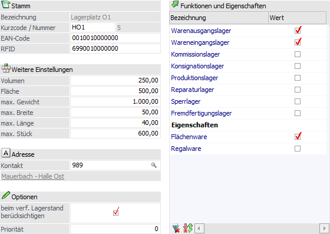
Nach Auswahl eines Lagerortes stehen im rechten Bereich des Fensters die Einstellungen des Ortes zur Verfügung.
Stamm
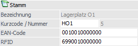
Ø Bezeichnung
An dieser Stelle wird der Name des Ortes angezeigt. Ein Ändern der Bezeichnung ist im Lagerortbaum durch Betätigung der Taste F2 möglich.
Hinweis
Das Zeichen "/" wird für die Darstellung der Lagerort-Hierarchie benötigt und kann somit nicht verwendet werden.
Ø Kurzcode
In diesem Feld kann dem Lagerort ein 5-stelliger Kurzcode zugewiesen werden.
Ø Nummer
An dieser Stelle wird die interne Nummer des Lagerorts angezeigt. Die Vergabe dieser Nummer erfolgt automatisch und ist nicht editierbar.
Ø EAN-Code
In dem Feld "EAN-Code" kann ein 128-stelliger alphanumerischer Code, z.B. für die Verwaltung des EAN-Codes, eingetragen werden.
Ø RFID
In dem Feld "RFID" kann ein 128-stelliger alphanumerischer Code, z.B. für die Verwaltung der RFID (radio-frequency identification), eingetragen werden.
Weitere Einstellungen
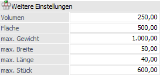
Ø Maßangaben
Mit Hilfe der folgenden Felder können die Maßangaben pro Ort definiert werden:
ü Volumen
ü Fläche
ü max. Gewicht
ü max. Breite
ü max. Länge
ü max. Stück
Hinweis
Diese Felder sind aktuell reine Informationsfelder.
Adresse
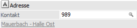
Ø Kontakt
An dieser Stelle kann die Adresse des Lagerorts (in Form eines WinLine-Kontaktes) definiert werden.
Optionen
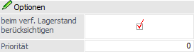
Ø beim verf. Lagerstand berücksichtigen
Hier kann angegeben werden, ob der Bestand des Lagerortes beim verfügbaren Lagerstand berücksichtigt werden soll.
Hinweis
An folgenden Stellen wird bzw. kann die Einstellung berücksichtigt werden:
ü Artikelstamm
ü Artikelbedarfsvorschau
ü Belegerfassung
ü Lagerorte erfassen
ü Artikel - Lagerorte
ü Bestand - Lagerorte
ü Kundenbestellungen bearbeiten
ü Bestellvorschlag erstellen
Achtung
Eine Änderung dieser Option ist nur möglich, wenn sich kein Bestand auf dem Lagerort befindet.
Ø Priorität
Mit Hilfe der Priorität (numerisch, 5-stellig) kann die Sortierung der Lagerorte im Programm "Lagerorte erfassen" beeinflusst werden.
Hinweis
Die Sortierung der Lagerorte im Programm "Lagerorte erfassen" erfolgt nach "Priorität absteigend" und "Anlagezeitpunkt" (pro Hierarchie-Ebene ausgewertet) aufsteigend. Zusätzlich werden ggfs. vorhandene Lagerort-Zuordnung berücksichtigt (nähere Information entnehmen Sie bitte dem Kapitel Lagerorte - Zuordnung - Feld "Priorität").
Funktionen und Eigenschaften
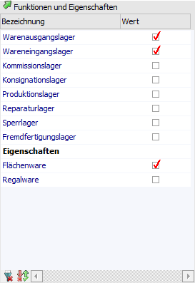
In dem Bereich "Funktionen und Eigenschaften" können jedem Lagerort Elemente zugewiesen werden, wodurch die weitere Nutzung in WinLine gesteuert wird.
Ø Funktionen
Mit Hilfe von Lagerortfunktionen wird gesteuert, wann welcher Ort für die Erfassung zur Verfügung steht. Hierbei können jedem Ort mehrere Funktionen gleichzeitig zugewiesen werden. Folgende Lagerortfunktionen stehen zur Verfügung:
ü Warenausgangslager
ü Wareneingangslager
ü Kommissionslager
ü Konsignationslager
ü Produktionslager
ü Reparaturlager
ü Sperrlager
ü Fremdfertigungslager
Die Lagerfunktionen werden dabei wie folgt berücksichtigt:
ü Belegerfassung => eigene Definition gemäß Belegart
ü Kundenbestellungen bearbeiten => eigene Definition gemäß Belegart
ü Lieferantenlieferungen bearbeiten => eigene Definition gemäß Belegart
ü Lagerbuchhaltung -> Buchungsschlüssel "L" => Wareneingangslager
ü Lagerbuchhaltung -> Buchungsschlüssel "V" => Warenausgangslager
ü Lagerbuchhaltung -> Buchungsschlüssel "P" => Produktionslager
ü Inventur => alle Lagerortfunktionen
ü Lagerorte umbuchen => eigene Definition gemäß Lagerortumbuchungsart
ü WinLine PPS / Handelsstückliste => Produktionslager
Ø Eigenschaften
An dieser Stelle werden die Eigenschaften des Typs "17 - Lagerorte" angezeigt. Durch Aktivierung der Eigenschaft im Lagerortestamm und im Artikelstamm wird eine 1:1-Verbindung geschaffen, so dass für den Artikel nur noch die zugewiesenen Orte zur Verfügung stehen.
Hinweis
Die Checkbox-Eigenschaften für Lagerorte / Artikel können in "WinLine Start - Optionen - Eigenschaften" angelegt werden.
Achtung
Die Aktivierung einer Eigenschaft im Lagerortestamm hat für die sogenannte "feine" Zuordnung der Lagerorte zunächst keine Auswirkung. Erst durch die zusätzliche Aktivierung der Eigenschaft im Artikelstamm wird die Zuordnung hergestellt.
Tabellenbuttons
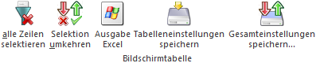
Ø Alle Zeilen markieren
Alle Zeilen in der Tabelle werden selektiert.
Ø Selektion umkehren
Durch Anwählen dieses Buttons werden die selektierten Datensätze deaktiviert und umgekehrt.
Ø Ausgabe Excel
Durch Anwahl des Buttons "Ausgabe Excel" wird der Inhalt der Tabelle an Microsoft Excel übergeben.
Ø Tabelleneinstellungen speichern
Die Spalten einer Tabelle können grundsätzlich an beliebige Positionen verschoben, bzw. in der Breite entsprechend angepasst werden. Durch Anwahl des Buttons "Tabelleneinstellungen speichern" werden die Einstellungen benutzerspezifisch gespeichert und bei dem nächsten Aufruf des Programmpunktes wieder vorgeschlagen.
Ø Gesamteinstellungen speichern…
Im Gegensatz zu "Tabelleneinstellungen speichern" können mit "Gesamteinstellungen speichern" mehrere Tabellenaufbauten gespeichert und nach Wunsch geladen werden. Zusätzlich werden Sonderfunktionen der Tabelle (z.B. "Spalte gruppieren") ebenfalls bei der Speicherung bedacht.
Buttons
Ø Ok
Durch Anwahl des Buttons "Ok" bzw. der Taste F5 werden die Lagerorte gespeichert bzw. angelegt und gespeichert (siehe Button "automatische Anlage").
Ø Ende
Durch Anklicken des Buttons "Ende" bzw. der Taste ESC wird das Fenster geschlossen und alle nicht gespeicherten Eingaben verworfen.
Ø Löschen
Mit Hilfe dieses Buttons wird der ausgewählte Lagerort (inklusive seiner Unterorte) gelöscht.
Hinweis
Der Löschvorgang kann nicht durchgeführt werden, wenn…
ü … Buchungen für den Lagerort vorhanden sind (aktuelles Wirtschaftsjahr).
ü … sich Bestand auf dem Lagerort befindet (aktuelles Wirtschaftsjahr).
ü … der Lagerort in der Inventurerfassung verwendet wurde (aktuelles Wirtschaftsjahr).
ü … der Lagerort in Belegen (inklusive erledigten / stornierten) verwendet wird.
Ø Bearbeiten
Bei Anwahl dieses Buttons wird der "Bearbeitungsmodus" aktiviert, d.h. bestehende Lagerorte können geändert und neue angelegt werden.
Ø automatische Anlage
Sobald sich der Fokus auf einem bestehenden Lagerort befindet und der Bearbeitungsmodus aktiv ist, können mit Hilfe des Buttons "automatische Anlage" mehrere Lagerorte - unterschiedlicher Hierarchie-Ebenen - in einem Vorgang angelegt werden. Hierfür wird an Stelle des Lagerortbaums eine Lagerortmatrix angezeigt, in welcher die Lagerorte mit der benötigten Anzahl hinterlegt werden können.
Im rechten Bereich des Fensters werden aufgrund des Ausgangsorts editierbare Vorbelegungen für die neuen Lagerorte angeboten, wobei die Felder "Kurzcode", "EAN-Code" uns "RFID" nicht vorbelegt werden können.
Beispiel
Der Fokus befindet sich auf einem Ort der ersten Hierarchie-Ebene, wobei die Lagerortstruktur "001 - Standard" mit 2 Ebenen geführt wird. Benötigt werden 3 neue Hallen und pro Halle 5 Bereiche.
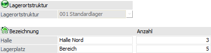
Durch Anwahl des Buttons "Ok" werden die 18 Lagerorte angelegt und direkt gespeichert.
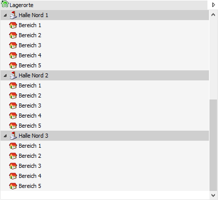